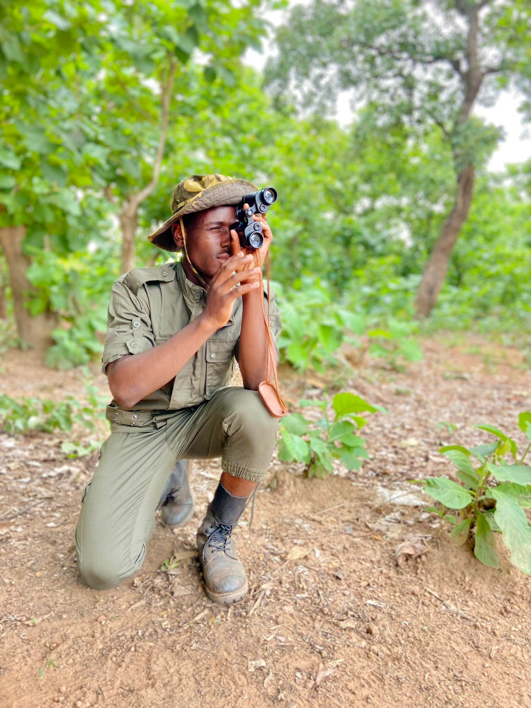
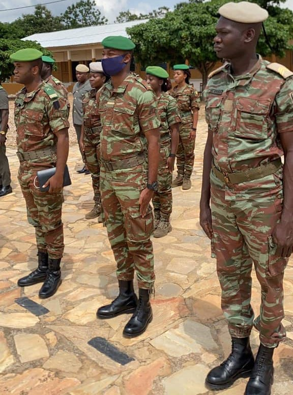
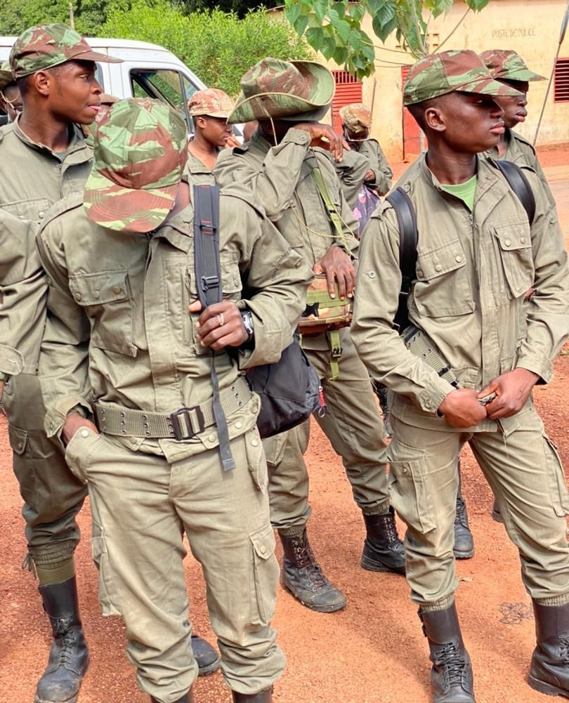

Comme tous les autres élèves du Bénin, les E.T suivent le cursus normal prévu par le système scolaire béninois. Il passent toutes les classes intermédiaires ainsi que les classes d'examens, 3ème et terminale donc le Brevet d'Etude du Premier Cycle (BEPC) et le Baccalaureat (BAC). A l'instar des examens nationaux, les E.T subissent en classe de 2nde, un examen militaire, le Brevet Préparatoire Militaire Supérieur (BPMS).
Les Enfants de Troupe du Prytanée Militaire de Bembérèkè composent le BEPC dans le modèle court uniquement. Quant au BAC, le PMB présente des candidats des séries A, C et D. Il est à noter que nous faisons preuve de notre excellence depuis quelques années , 100% au BAC comme au BEPC et meilleurs du Bénin depuis 2018 .
| 2017-2018 | 100% (42/42) | 100% (24/24) |
| 2018-2019 | 100% (53/53) | 100% (30/30) |
| 2019-2020 | 100% (40/40) | 100% (37/37) |
| 2020-2021 | 100% (40/40) | 100% (38/38) |
| 2021-2022 | 100% (30/30) | 100% (36/36) |
| 2022-2023 | 100% (../..) | 100% (45/45) |
L'instruction militaire enseignée aux élèves des classes intermédiaires du PMB, est evaluée dans toutes les séries de devoirs surveillés pour les classes intermèdiaires ainsi que en classe de seconde, par l'examen du BPMS. Cet examen donne droit à un diplôme équivalent au CQM2 (grade de sergent) rend compte de de leurs compétences militaires, théoriques comme pratiques. Il est effectué ensemble avec leurs collègues du Lycée Militaire de Jeunes Filles Général Mathieu Kérékou de Natitingou (LMJF - GMK).
Il est à noter que jusqu'en 2021 les E.T subissaient un autre examen militaire le Brevet Préparatoire Militaire Elémentaire (BPME) en classe de 4ème. Pendant cette période, le BPMS s'organisait en classe de 1ère

Les connaissances évaluées sont ceux qui leur ont été enseignées. On distingue alors, les épreuves sportives (marche-course, parcours d'obstacles,pompes et abdominaux) , écrites (topographie,

Une commission, dirigée par un officier supérieur des Forces Armées Béninoises, est désignée chaque année pour organiser le BPMS. Les E.T du Prytanée Militaire de Bembérèkè et

Notons que pour la préparation de ces examens les E.T séjournent pendant 2 à 4 jours dans la brousse loin de la caserne. Le mouvement allé et celui du retour des E.T et de leurs effets est assuré par les E.T eux mêmes et
 PMB
PMB